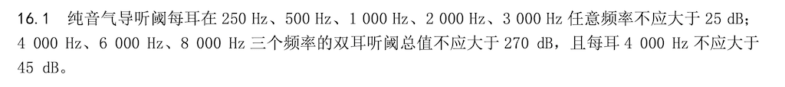

© 2024 庞玺桐 版权所有吉ICP备2024017023号-1
 吉公网安备22017202000465号
吉公网安备22017202000465号
下图为中国民用航空局局发布的《民用航空招收飞行学生体检鉴定规范》(下载文件)在线浏览关于听力“纯音导气听阀”的标准
百科：纯音导气听阀（也称作纯音气导听阀）是指在进行纯音测听时，通过空气传导的方式，检测被测试者对纯音（单一频率的声音）的听觉敏感度的一种方法。测试时需要把一个特制的探头（通常是一个小型电喇叭或压缩空气泵）放在被测试者的耳朵旁边，逐个频率测试被测试者能听到的最小声音（纯音）的大小（分贝）。纯音导气听阀值正常范围为0-25分贝。
提示：手机音量一档（有按键调整音量到零后，按一次音量+按钮）大约为30dB。
注意：此程序仅做参考，不严格符合医学标准，如有需要请尽快去医院就诊。
庞玺桐2023.6.25